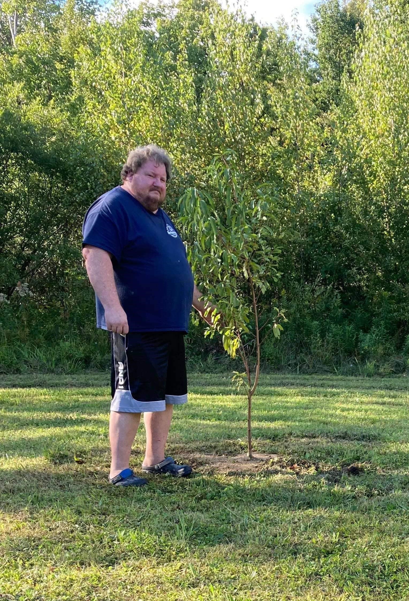

Joseph Mordarski is a native of Meriden, Connecticut where he grew up farming
the land and milking 70 cows from early sunrise to late sunset. It was a lifestyle
he was born and raised in and when he had the opportunity to work at a larger farm
outside his native area, in upstate New York, he jumped at the chance to learn new
techniques and meet new people.
Biography
As the farming industry dwindled Joseph found himself seeking work elsewhere and
created a business in spice rubs. This was a great opportunity for him as upstate
New York offered many different styles of meats fresh from the local butchers. But
Joseph still longed for the pastime of farming and decided that homesteading was the
closest way he could have farm-fresh food while living a self-sustaining lifestyle.
Joseph has been homesteading now for about a year and enjoys hydroponic farming,
beekeeping, and composting. He has learned several techniques from other homesteaders
and online groups and has just started his beekeeping journey. His interest in
hydroponic farming came from a trip to the local agriculture convention where they
provide information to farmers and homesteaders on ways to maintain a self-sustaining
lifestyle. He also learned about hydroponic farming on a trip to Disney World where
they offered a tour of their 2.5 million square foot hydroponic greenhouse. Composting
came natural to him as he is always looking for ways to reduce his footprint and give
back to nature.
Joseph was recently blessed with a baby girl and intends on enrolling her in the New
York State 4-H program to learn about agriculture and sustainable food systems.